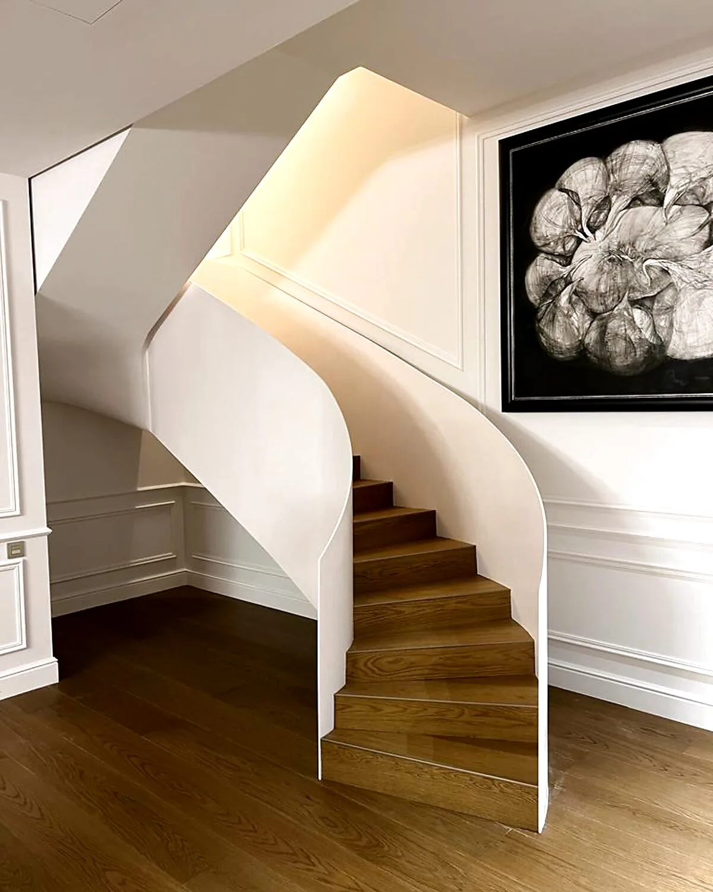
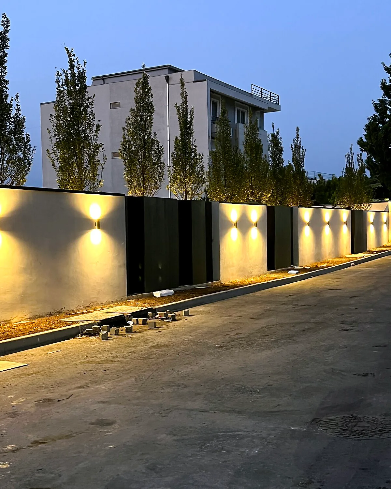
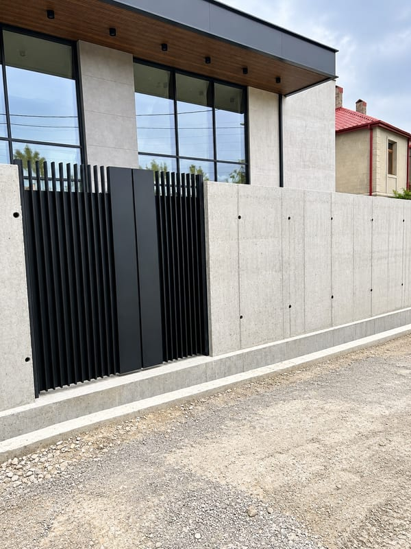
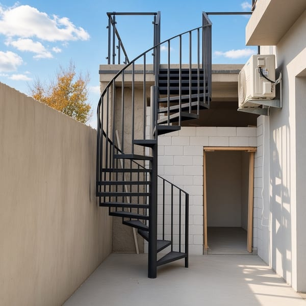
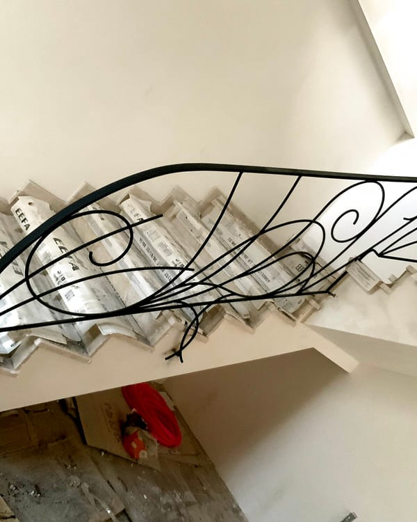
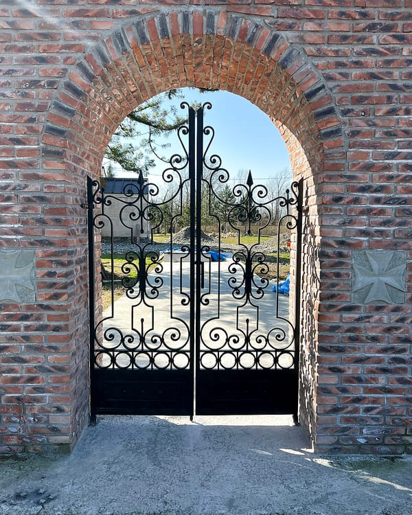
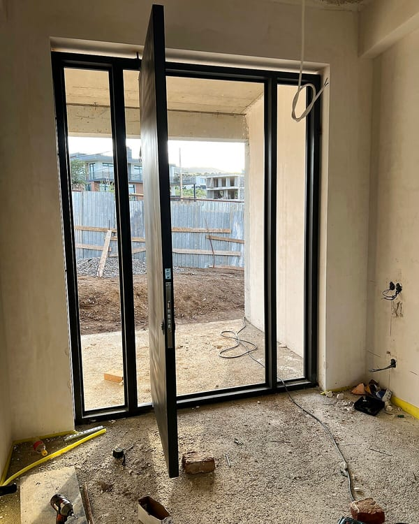
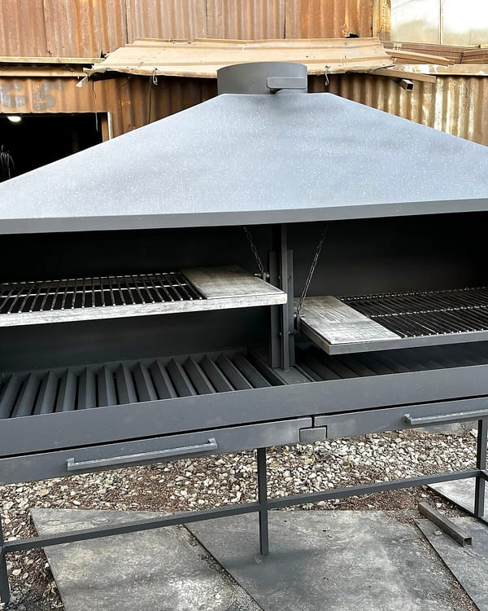
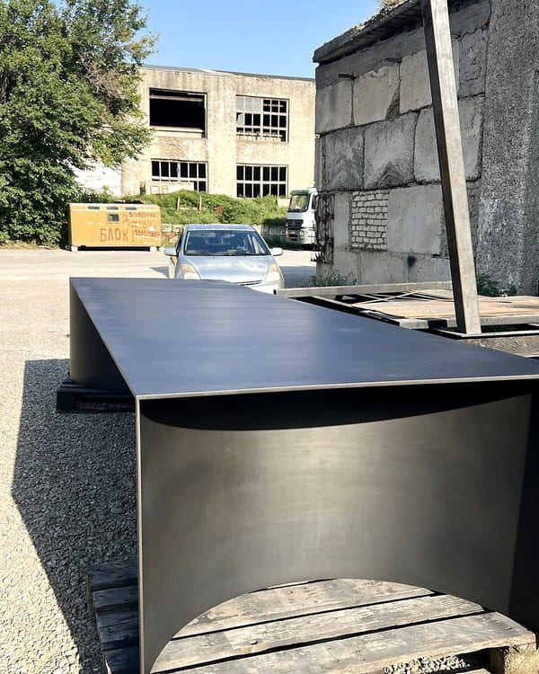
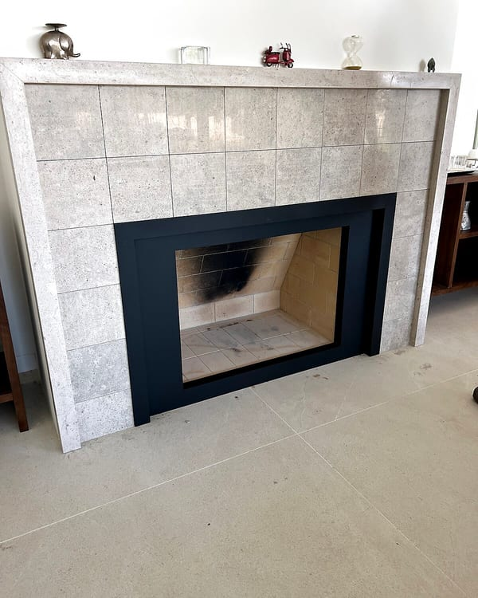

Metal
fabrication
workshop
From gates and railings to one-off furniture. We make metalwork built to last for decades.

We design first, then we build
Every piece is modelled in 3D before we cut any metal. We see every detail, dimension and joint in advance — so fabrication and assembly are precise, with no rework on site.
Precision you can see in the details
Our workshop makes every piece by hand — from the first sketch to final installation. Every project is different, so we work with your space and taste individually, not from templates.
We focus on material quality and clean welds — the result should last not for years, but for generations.
What we offer
Four core directions — all with the same craft.

Our own design or your sketch — from the entrance gate to the full perimeter.
Featured work
Choose a project to see its description and similar work.








How we work
Consultation
We discuss the idea, dimensions and site — by phone or with an on-site visit.
Design & approval
We prepare a sketch and a price, and agree on every detail before fabrication.
Workshop fabrication
Hand welding and finishing — with quality control at every stage.
Installation
We deliver the finished piece and install it on site.
Ready to start?
Call us and briefly describe your idea — we will work out the rest together.